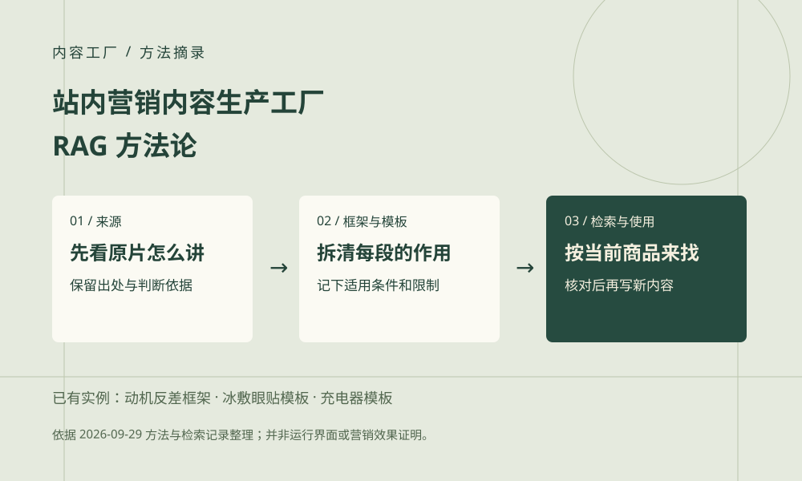
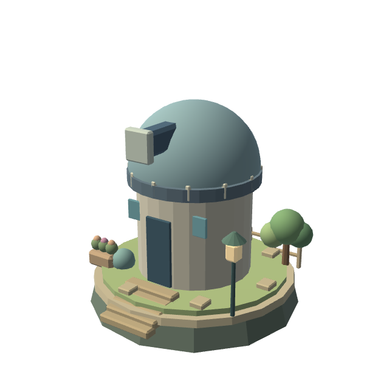

已有方法与本地知识库斌哥的 AI 小世界拖动旋转 · 点击项目地标 · Esc 返回
我的项目宇宙
当前设备无法显示三维场景，五个项目仍可直接阅读。
微笑 · 电商内容工厂
↓进入作品宇宙
拖动星球旋转 · 点击地标探索
SELECTED WORK / 代表案例
代表项目与实践
内容方法、流程原型与分析报告。按实际产物展示项目阶段与覆盖边界。
THE BUSINESS ATLAS / 业务自动化地图把重复的工作交给流程，
把重复的工作交给流程，
把创造力还给人。
从真实业务出发，将分散的任务，连接成可执行、可检查、可复用的 AI 自动化系统。
商品与供应链运营域
丰穗洲好生意，从一件好商品开始。
查看系统与案例 ↗内容与营销增长域
花语洲让好商品，被更多人看见。
查看系统与案例 ↗交易与客户服务域
暖港洲接住每一次咨询与信任。
查看系统与案例 ↗
经营决策与组织效能域
远见洲看清经营，再走好下一步。
查看系统与案例 ↗四大业务域 · 13 个系统方向 · 42 个规划子模块
查看系统与模块清单 ↓SYSTEM DIRECTORY / 系统明细总览
四大业务域，13 套系统。
42 个规划子模块 · 按业务问题找到适合的自动化方向
打开系统明细表搜索、筛选、查模块，也可以下载完整清单。
显示 13 个系统 · 42 个子模块
| 系统 | 子模块 | 覆盖业务场景 | 适合谁 / 发生频率 | 案例阶段与入口 |
|---|---|---|---|---|
| 01商品与供应链运营域丰穗洲 | ||||
| SYSTEM 01商品全生命周期运营系统 |
|
| 新品部门 / 品牌电商 按新品批次、每周复盘 | 流程原型 · 内容作品平替一期 · 在线镜像可体验 定位到案例区 ↓ |
商品全生命周期运营 · 子模块明细以下是规划流程，实际覆盖范围见代表案例。 选品决策引擎
商品基础内容生产工厂
合规校验引擎
评论洞察优化引擎
竞品监控引擎
| ||||
| SYSTEM 02库存与采购协同系统 |
|
| 贸易商 / 采购与供应链团队 每日监控、每批次采购 | 本机流程原型平替一期 · 在线镜像可体验 定位到案例区 ↓ |
库存与采购协同 · 子模块明细以下是规划流程，实际覆盖范围见代表案例。 库存预警引擎
补货决策引擎
供应商比价引擎
采购协同中心
| ||||
| SYSTEM 03物流运费管控系统 |
|
| 跨境卖家 / 大货贸易商 每批次发货、每日巡检 | 方案案例 · 待开发 定位到案例区 ↓ |
物流运费管控 · 子模块明细以下是规划流程，实际覆盖范围见代表案例。 运费核算引擎
物流追踪中心
异常索赔中心
| ||||
| 02内容与营销增长域花语洲 | ||||
| SYSTEM 04全域内容生产与分发系统 |
|
| 电商运营 / 带货团队 / 自媒体 日常内容、上新与活动期 | RAG 方法实践 · 本地知识资产流程讲解 · 制作材料 定位到案例区 ↓ |
全域内容生产与分发 · 子模块明细以下是规划流程，实际覆盖范围见代表案例。 站内营销内容生产工厂查看本工厂的 RAG 方法论 ↗
抖快带货短视频量产工厂
TikTok 多语种内容生产工厂
多平台分发调度中心
| ||||
| SYSTEM 05直播全链路运营系统 |
|
| 抖快 / TikTok 直播团队 每场直播 | 方案案例 · 待开发 定位到案例区 ↓ |
直播全链路运营 · 子模块明细以下是规划流程，实际覆盖范围见代表案例。 抖快直播场控中心
TikTok 跨境直播运营中心
直播复盘优化引擎
| ||||
| SYSTEM 06全域广告投放优化系统 |
|
| 品牌投放团队 / 跨境卖家 每日监控、每轮测试 | 外部参考 · 本地待实测数据模板 · 待接入 定位到案例区 ↓ |
全域广告投放优化 · 子模块明细以下是规划流程，实际覆盖范围见代表案例。 站内投放优化引擎
抖快信息流投放优化引擎
海外短视频投放优化引擎
| ||||
| SYSTEM 07达人与 KOL 合作管理系统 |
|
| 品牌商务 / 达人运营团队 每轮建联、每次合作 | 方案案例 · 待开发 定位到案例区 ↓ |
达人与 KOL 合作管理 · 子模块明细以下是规划流程，实际覆盖范围见代表案例。 抖快达人匹配引擎
海外 KOL 建联中心
合作效果核算引擎
| ||||
| 03交易与客户服务域暖港洲 | ||||
| SYSTEM 08询盘与订单履约系统 |
|
| 跨境贸易 / B2B 销售团队 每次询盘、每笔订单 | 外部参考 · 本地待实测方案案例 · 待开发 定位到案例区 ↓ |
询盘与订单履约 · 子模块明细以下是规划流程，实际覆盖范围见代表案例。 询盘报价处理中心
订单履约协同中心
| ||||
| SYSTEM 09全渠道售后工单系统 |
|
| 电商客服 / 品牌售后团队 每日处理、定期复盘 | 售后归因分析方案案例 · 待开发 定位到案例区 ↓ |
全渠道售后工单 · 子模块明细以下是规划流程，实际覆盖范围见代表案例。 售前答疑中心
售后工单处理中心
退换货逆向处理中心
| ||||
| SYSTEM 10财务对账与单据核验系统 |
|
| 财务 / 运营 / 贸易企业 每个结算周期 | 方案案例 · 待开发 定位到案例区 ↓ |
财务对账与单据核验 · 子模块明细以下是规划流程，实际覆盖范围见代表案例。 单据匹配引擎
差异排查引擎
结算归档中心
| ||||
| 04经营决策与组织效能域远见洲 | ||||
| SYSTEM 11经营分析与异常预警系统 |
|
| 老板 / 运营负责人 每日看数、周月复盘 | 数据模板 · 待接入 定位到案例区 ↓ |
经营分析与异常预警 · 子模块明细以下是规划流程，实际覆盖范围见代表案例。 数据整合引擎
经营异常预警引擎
报表自动生成工厂
| ||||
| SYSTEM 12客户运营与私域增长系统 |
|
| 私域运营 / 客户成功团队 生命周期节点、每轮活动 | 方案案例 · 待开发 定位到案例区 ↓ |
客户运营与私域增长 · 子模块明细以下是规划流程，实际覆盖范围见代表案例。 客户画像引擎
私域触达中心
效果分析引擎
| ||||
| SYSTEM 13服务质量与合规管控系统 |
|
| 客服主管 / 服务质量团队 每日质检、定期培训 | 客服质检报告外部参考 · 本地待实测 定位到案例区 ↓ |
服务质量与合规管控 · 子模块明细以下是规划流程，实际覆盖范围见代表案例。 会话质检引擎
话术优化引擎
效能分析中心
| ||||
没有找到匹配的系统
换一个业务关键词，或重置筛选查看全部系统。
阅读提示：明细表展示系统设计范围；“流程原型”“数据模板”“外部参考”和“待开发方案”分别标明当前阶段，不等同于全部能力已上线。
13 个系统 · 20 个案例入口实践 / 模板 / 外部参考 / 待开发方案
按实际材料标注阶段；同一实践可关联多个系统，不代表独立交付数量。
01 / FROM PRODUCT TO DELIVERY
商品与供应链运营域
丰穗洲
好生意，从一件好商品开始。
连接商品、库存、采购与物流，让运营经验变成可以追踪的业务流程。
商品全生命周期运营系统
2 个代表案例让新品从立项到上新，每一步都有依据。
选品决策引擎商品基础内容生产工厂合规校验引擎评论洞察优化引擎竞品监控引擎
展开本业务域其他系统
库存与采购协同系统
2 个代表案例把库存风险、补货判断与采购交付接起来。
库存预警引擎补货决策引擎供应商比价引擎采购协同中心
物流运费管控系统
1 个代表案例运费怎么算、货到哪里、异常谁来跟。
运费核算引擎物流追踪中心异常索赔中心
制作记录与补充材料
需求与商品资料↓设计 · 采购 · 内容↓定价上新 → 反馈复盘
依据现有材料整理 · 流程 / 结构示意FIELD NOTES / 实践档案 · 01
把新品上新，串成一条有交接的流程。
从需求、找厂、打样，到内容制作与上新，把分散在不同岗位的工作接起来。
已有产物
产品流程结构与阶段表单 / 本机看板原型及审批流转
制作记录与补充材料
BUILD LOG / AI 协作开发实录 · 2026.09
功倍到期了，我花了一个晚上复刻了一个
企微功倍快到期了。我用 AI 搭建了一套流程平替演示，把新品、设计和采购的协作路径，重新组织成可以浏览的看板。
从真实业务问题出发，拆解 SOP、节点与字段，再用 AI 协作完成开发与迭代。
三段过程录屏按时间顺序压缩，包含 AI 协作与原平台对照；局部人员信息与浏览器地址已遮挡，其余画面保持清晰。
业务起点服务到期，流程需要延续
实施方式业务拆解 × AI 协作开发
可体验产物流程与协作页面镜像
02 / TURN IDEAS INTO GROWTH
内容与营销增长域
花语洲
让好商品，被更多人看见。
从内容制作到直播、投放和达人合作，围绕抖快、TikTok 与多平台经营建立增长链路。
全域内容生产与分发系统
2 个代表案例让商品内容持续产出，也保持品牌和细节一致。
站内营销内容生产工厂抖快带货短视频量产工厂TikTok 多语种内容生产工厂多平台分发调度中心
广告与品牌分析 / 724 ADS · 37 BRANDS
724 条广告，按品牌与卖点整理成可复核的素材库。
从海量竞品素材中识别卖点、促销方式与行动引导，为下一轮内容与投放测试提供线索。
应用方案 · 外部参考视频：AI风向标 · 外部案例参考
本地材料：Laya 部署教程与接入方案，尚待实测。
展开本业务域其他系统
直播全链路运营系统
1 个代表案例把开播前、直播中、下播后变成连续的 SOP。
抖快直播场控中心TikTok 跨境直播运营中心直播复盘优化引擎
全域广告投放优化系统
2 个代表案例把素材、预算与投放表现放进同一条优化链路。
站内投放优化引擎抖快信息流投放优化引擎海外短视频投放优化引擎
达人与 KOL 合作管理系统
1 个代表案例从找到合适的人，到看清一次合作的结果。
抖快达人匹配引擎海外 KOL 建联中心合作效果核算引擎
制作记录与补充材料
已选营销成片 · 画面预览
FIELD NOTES / 实践档案 · 04
从商品资料，到能被看懂的内容。
同一份商品信息，形成品牌套图、场景短视频和多语种内容的制作流程。
已有产物
多品牌商品套图制作材料 / 产品 / 场景替换工作流与演示
SELECTED FILMS / 内容交付切片
让应用，落到看得见的作品。
精选营销视频 · 点击播放
成片展示不代表投放效果
场景替换
车载悬挂垃圾袋
让车内收纳，有一个顺手的位置。
宿舍场景 · 二稿
宿舍挂式纸巾袋
不用下床找纸，伸手就能抽取。
人群场景
宿舍三合一漱口杯
先有宿舍里的烦恼，再有产品。
生活场景
婴儿车纸巾收纳袋
把一次弯腰，变成顺手抽取。
WORKFLOW NOTES / 自动化流程讲解
从选题到成片，让每一步留下记录。
展示命令、代码、产物与检查记录如何串联。此视频为流程讲解，完整连续实操录屏仍待补充。
03 / EVERY ORDER MATTERS
交易与客户服务域
暖港洲
接住每一次咨询与信任。
把询盘、订单、售后与对账接成闭环，让客户问题有去处，让交付过程有记录。
全渠道售后工单系统
2 个代表案例把重复的售后问题，转成明确的处理与改进线索。
售前答疑中心售后工单处理中心退换货逆向处理中心
邮件分类与询盘分流 / EMAIL TRIAGE
先给邮件分好类，再让询盘进入正确流程。
把询价、售后、供应商和其他来信分流，让销售优先处理真正需要跟进的需求。
应用方案 · 外部参考视频：AI风向标 · 外部案例参考
本地材料：Laya 部署教程与接入方案，尚待实测。
展开本业务域其他系统
询盘与订单履约系统
2 个代表案例让询盘接得住，报价有依据，订单有人跟。
询盘报价处理中心订单履约协同中心
财务对账与单据核验系统
1 个代表案例把单据对齐，把差异留下，把结算说明白。
单据匹配引擎差异排查引擎结算归档中心
制作记录与补充材料
产品体验瑕疵 / 划痕
履约体验快递 / 破损
使用反馈分类 · 关联 · 归因
FIELD NOTES / 实践档案 · 09
把零散售后，变成可追踪的问题。
按问题类型和店铺整理反馈，让产品、包装和履约的改进有具体线索。
已有产物
售后问题类型汇总表 / 店铺关联分析表
04 / MAKE BETTER DECISIONS
经营决策与组织效能域
远见洲
看清经营，再走好下一步。
连接经营分析、客户运营和服务质检，让数据进入日常决策，也让经验留在组织里。
服务质量与合规管控系统
2 个代表案例发现服务问题，也给出可以执行的改进建议。
会话质检引擎话术优化引擎效能分析中心
JEV 平替候选 / LAYA LOCAL
给工作流增加一个本地分类与判断环节。
整理 Windows / macOS 部署步骤和 Codex MCP 接入方法，为文本分类、质检辅助与任务分流准备可复用方案。
部署方案已整理 · 实测待完成视频：AI风向标 · 外部案例参考
本地材料：Laya 部署教程与接入方案，尚待实测。
展开本业务域其他系统
经营分析与异常预警系统
1 个代表案例把分散的数据，变成能解释经营变化的信号。
数据整合引擎经营异常预警引擎报表自动生成工厂
客户运营与私域增长系统
1 个代表案例知道客户是谁，再决定下一次如何沟通。
客户画像引擎私域触达中心效果分析引擎
制作记录与补充材料
会话质检 · 报告结构
依据现有材料整理 · 流程 / 结构示意问题类型 定位服务断点
判断理由 支持逐条复核
建议回复 形成改进动作
FIELD NOTES / 实践档案 · 13
让服务问题，有理由、有改进建议。
把会话中的问题标记、判断理由与建议回复放在一起，支持逐条复核。
已有产物
问题明细与判断理由 / 问题类型分布和汇总
HOW I BUILD / 工作方法
系统的价值，
要回到业务里验证。
从一个高频、边界明确的环节开始。先走通，再扩展；让人负责关键判断，让工具承担重复执行。
- 01
拆清业务
明确输入、责任人、处理规则与预期输出。
- 02
串起流程
按任务接入模型、知识、工具与业务数据。
- 03
留好检查点
设置人工审核、异常处理与结果回溯。
- 04
持续复盘
根据实际运行记录修正流程，沉淀可复用方法。
THE BUILDER / 世界的建造者
把增长经验，
带进每一条自动化流程。
面向电商、跨境电商与传统企业，把增长经验转化为可执行、可复用的 AI 自动化方案。从业务诊断、流程设计到工具集成与交付验收，以四大业务域组织系统方案，用真实案例呈现实践。
业务流程拆解AI 内容工作流Python / Codex 辅助实现工具编排与结果复核
AIGC 工作室
创始人兼首席 AI 策略师代表案例：AI 工业化内容生产线、跨境电商视觉与带货内容、站内内容工厂 RAG 方法体系、功倍流程复刻。负责业务诊断、方案设计、流程搭建与交付，持续沉淀可复用的方法和工具。
群核科技
增长运营专家代表案例：PLG 会员增长与转化路径优化、全渠道流量矩阵与留存优化。连接生命周期运营、用户分层、自然获客与数据复盘，为自动化方案提供业务指标和增长判断。
丁香园
用户增长专家代表案例：丁香医生内容矩阵与多端复用、热点响应与专业审核机制。将知识转化、专家协作、多平台分发与反馈复盘组织成内容生产流程。